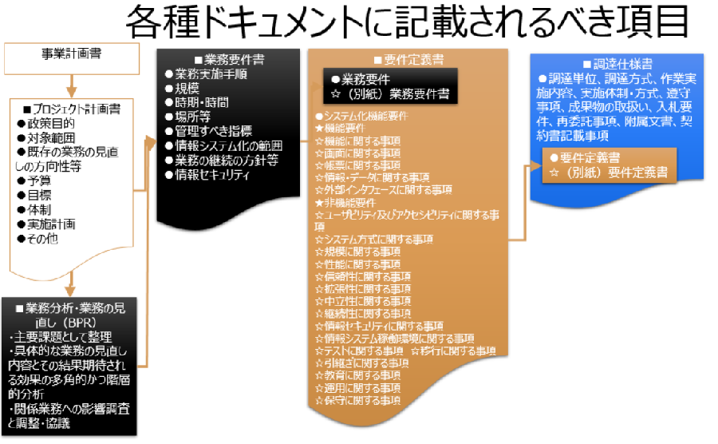

- DAX41-2 ゼミ課題成果物【例】
- 何をするサービスか（サービス要件）
- レファレンスに必要な情報の蓄積
- 図書館等において精緻に作成された過去のレファレンス事例、辞書、書誌データを教師データとしてAIに投入する
- 利用者からのレファレンスに対して回答
- 利用者からの問合わせに対して、AIシステムを活用して、可能な限り「事実情報」を提供する
- 利用者からの問合わせに対して、参考になりそうな文献候補を提示する
- その文献候補の所蔵先へ案内する
- デジタル化された情報があれば、閲覧サービスまでナビゲート
- デジタル化された情報がなければ、貸出、購入サービスへナビゲート
- これにより何がどのように良くなるか（事前評価）
- 業務とシステムはどのように分担してサービスを構築するか
- サービス全体概要（ユースケース図、データフローダイアグラム（DFD）、エンティティリレーション図（ER図））
- レファレンスに必要な情報の蓄積
- 自館しか所蔵していない貴重な資料の可視化（デジタル化、電子書籍化、本文テキスト化、メタデータ付与）
- 自館しか所蔵していない貴重な資料の知識化（人もしくはAIシステムで組織化）
- 他機関が提供する資料と併せて知識として統合利用化（Japanサーチ等のサービスの利用）
- 利用者からのレファレンスに対して回答
- 入力機能（GUI）
- 利用者からの問い合わせを、キーワードのみならず、自然言語で受け付けられるようにする
- 処理する機能
- キーワード、文脈から、統合利用化された知識を検索し、内容を取り出す
- 出力機能（GUI）
- 問い合わせに対して事実が明確な場合は、その事実内容の紹介する
- 問い合わせに関連した記述された参考文献があれば、その文献の記述部分を紹介する
- 問い合わせに関連した参考文献の候補と所蔵場所を紹介する
- 開発者に提案を求める要件【RFP】（調達仕様書）
- 参考
- 
- 【最新版】【スライド】09-10政府ガイドライン、iコンピテンシ・ディクショナリの図書館での適用【詳細】.pptx
- どのような手順・条件で調達するか（調達手続き調達要件）
- 調達単位
- 調達方式
- 作業実施内容

- 実施体制・方式
- 遵守事項
- 成果物の取扱い
- 入札要件
- 再委託事項
- 附属文書
- 契約書記載事項
- システムで何ができるようにするのか（個別機能要件）
- 政府情報システムガイドラインで示された記述要件のうち、特に機能要件部分
- 機能に関する事項
- メタデータ、画像データの登録・変更・公開機能
- レファレンスに必要な情報の蓄積
- 学習データとしてAIシステムに投入
- 過去のレファレンス事例
- レファレンス協同データベース
- 辞書データ
- Wikipedia
- JapanKnowledge等
- 書誌データベース
- Japanサーチ（仮称）に蓄積されたメタデータ
- AIシステムで学習
- レファレンス事例、辞書等を教師データとする
- 過去の書誌情報（メタデータ）から分類、件名の付与値の教師データとする
- 利用者からのレファレンスに対して回答
- 入力機能（GUI）
- 何々について知りたい
- 処理する機能（外部サービスの活用）
- 自然言語処理
- AIサービス
- 文献等検索システム
- 自然言語処理
- 。。。
- 出力機能（GUI）
- 事実の紹介
- 何々によると答えはZZです
- 参考文献での記述部分を紹介
- 参考になる文献のどこどこに記述されています
- 参考文献の紹介
- 参考になる情報源（文献等）は何々です
- 画面に関する事項
 業務用、利用者用のGUI仕様
業務用、利用者用のGUI仕様
- 帳票に関する事項
- 業務管理用、利用者印刷用プリントアウト仕様
- 情報・データに関する事項
- 永続的識別子
- メタデータ
- 目次・索引データ
- 関連データ
- 画像データ
- 全文テキストデータ仕様
- 外部インタフェースに関する事項
（他システム連携のAPI仕様）- メタデータ交換
- コンテンツ交換仕様
- 機械学習API仕様
- どのようなデジタルコンテンツを用意するか（コンテンツ構築要件）
- 原資料からのデジタル化
- デジタル化方法
- 撮影
- スキャニング
- フラットベッド、オーバーヘッド、デジタルカメラ
- フィルム撮影、フィルムからデジタル化
- スキャニング単位
- 見開き、片ページ
- 媒体
- マイクロフィルム、カラーマイクロフィルム
- 大判・中判フィルム、35㎜フィルム
- 光ディスク
- スキャニング方法
- 色調、明るさ及びコントラストの調整仕様
- カラーマネジメント
- 品質検査仕様
- 画像データ仕様
- 画像フォーマット
- 保存用画像：Jpeg2000,tiff,Jpeg,PNG,PDF,,,
- 提供用画像：予め作成しておく場合の形式
- サムネイル画像
- 解像度、サイズ、圧縮率
- カラースペース、階調
- コンテナ形式
- EPUB、PDF
- FIX型（レイアウト保持）, リフロー型, ハイブリット型
- 単一画像
- メタデータ
- テキストデータ仕様
- EPUB3.0（現在3.1版策定中）
- HTML/CSS
- XML, XHTML
- プレーンテキスト
- 電子書籍化要件定義
- 最終成果物の形式
- 構造化テキスト（マスター原稿）
- XML+XSL
- HTML5+CSS3
- リフロー型電子書籍（文字主体の本）
- EPUB3.1
- FIX型電子書籍（ビジュアル指向の本）
- EPUB3.1
- PDF （テキスト埋め込み有無）
- Webページ
- HTML5+CSS3
- PODによるペーパーバック本
- 作成するメタデータ記述要素・記述規則
- 書誌的事項のメタデータ
- 本文埋め込みメタデータ
- 指定するビューア依存形式
- 利用するコンテンツ制作環境サービス
- 維持管理に利用するコンテンツ管理用・制作用ツール
- Calibre（オープンソースソフトウェア）...
- 適用するコンテンツ制作用ガイドライン・テンプレート
- 超原稿用紙（MSWORD版）（インプレスR&D）
- 電書協 EPUB 3 制作ガイド ver.1.1.3（日本電子書籍出版社協会）
- XML組版ガイドライン（学術情報XML推進協議会）
- 性能や信頼性、拡張性、運用性、セキュリティなどに関する要件（非機能要件）
- ☆ユーザビリティ及びアクセシビリティに関する事項
- ☆システム方式に関する事項
- ☆規模に関する事項
- ☆性能に関する事項
- ☆信頼性に関する事項
- ☆拡張性に関する事項
- ☆中立性に関する事項
- ☆継続性に関する事項
- ☆情報セキュリティに関する事項
- ☆情報システム稼働環境に関する事項
- ☆テストに関する事項 ☆移行に関する事項 ☆引継ぎに関する事項
- ☆教育に関する事項
- ☆運用に関する事項
- ☆保守に関する事項
- 人は何をするか（業務要件）
- ●業務実施手順
- ●規模
- ●時期・時間
- ●場所等
- ●管理すべき指標
- ●情報システム化の範囲
- ●業務の継続の方針等
- ●情報セキュリティ
- 改版履歴
- 【2017年7月12日改訂】